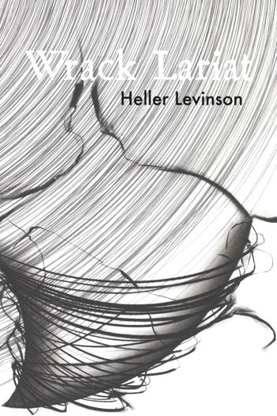

Jester-Knight
Literature
Film
Music
Visual Art
Tributes
Submissions
Links
Contact
Heller Levinson
Biography
Heller Levinson lives in New York where he studies animal behavior. He has published in over a hundred journals and magazines. His publication, Smelling Mary (Howling Dog Press, 2008), was nominated for both the Pulitzer Prize and the Griffin Prize. Black Widow Press published his from stone this running in 2012. Hinge Trio was published by La Alameda Press in 2012. Wrack Lariat is newly released from Black Widow Press. Video from the book launch and more is available here. He is the originator of Hinge Theory.
email: hingetheory@gmail.com
web: www.hellerlevinson.com

Click below for Heller's work
Poems (.pdf) NEW!!!